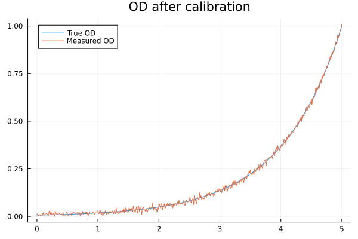
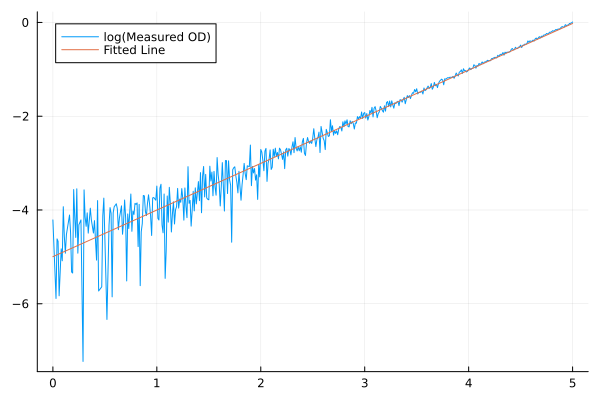
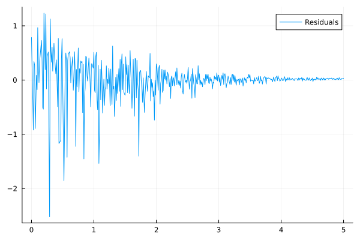
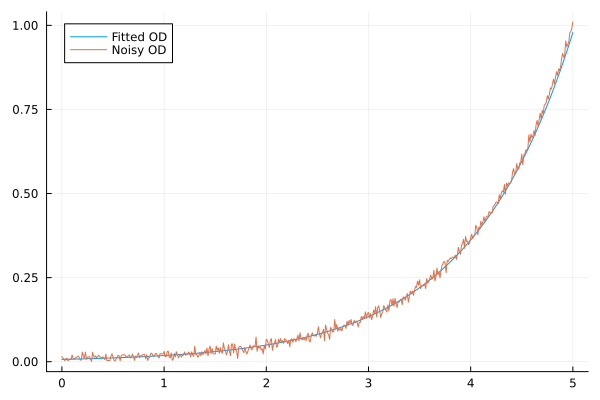
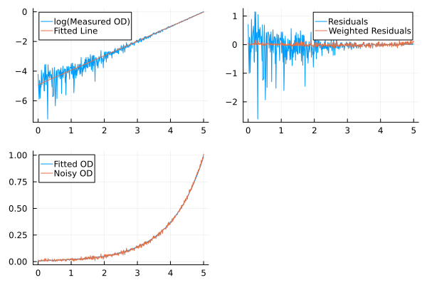

Growth Rate
There are a variety of methods for calculating growth rates (or doubling times). Each method uses the growth_rate(data, time_col, Method()) function signature (or doubling_time(data, time_col, Method())). These can be used in the transformations in the Excel template.
ESM.growth_rate — Function
growth_rate(df, time_col, method::AbstractGrowthRateMethod)Calculates the growth rate of a given dataframe. Returns in min^-1 using base e.
Arguments:
df::DataFrame: DataFrame containing the data.time_col::DataFrame: DataFrame containing the times.method::AbstractGrowthRateMethod: Method to use for calculating growth rate.
Keywords:
recalibrate: Whether to recalibrate the data usingcalibratebefore calculating growth rate. Default is :negative (only if negative values are present in the well). Available options are:negative, true, and false.offset: If data is recalibrated, this is the offset applied after calibration. Default is 0.001.plot_directory: If provided, this is the directory to save plots of the growth curves with the fitted growth rate. Default is nothing (no plots saved). If :temp, plots will be saved to a temporary directory.
ESM.doubling_time — Function
doubling_time(df, time_col, method::AbstractGrowthRateMethod; kwargs...)Calculates the doubling time of a given DataFrame. Returns result in minutes.
Arguments:
df::DataFrame: DataFrame containing the data.time_col::DataFrame: DataFrame containing the times.method::AbstractGrowthRateMethod: Method to use for calculating growth rate.kwargs...: Additional keyword arguments to pass to the growth rate method.
Make sure you try the plot_directory option to ensure your summary statistics are appropriate for your growth curve data. Some methods have adjustments you can make to improve the fit.
Other functions
Not only are methods available for calculating growth_rate and doubling_time, but there are also methods for calculating related summary statistics of time and OD at maximum growth, lagtime, and maximum OD. All these use the same function signature and their definitions depend on the specific growth rate method that is being used.
ESM.max_od — Function
max_od(df, time_col, method::AbstractGrowthRateMethod)Calculates the maximum OD of a given dataframe. This may depend on the growth rate method used.
Arguments:
df::DataFrame: DataFrame containing the data.time_col::DataFrame: DataFrame containing the times.method::AbstractGrowthRateMethod.
ESM.time_to_max_growth — Function
time_to_max_growth(df, time_col, method::AbstractGrowthRateMethod)Calculates the time at which growth is maximised.
Arguments:
df::DataFrame: DataFrame containing the data.time_col::DataFrame: DataFrame containing the times.method::AbstractGrowthRateMethod.
ESM.od_at_max_growth — Function
od_at_max_growth(df, time_col, method::AbstractGrowthRateMethod)The OD at which growth is maximised.
Arguments:
df::DataFrame: DataFrame containing the data.time_col::DataFrame: DataFrame containing the times.method::AbstractGrowthRateMethod.
ESM.lag_time — Function
lag_time(df, time_col, method::AbstractGrowthRateMethod)Calculates the lag time of the growth curve. This is given as the t-axis intercept of the tangent at the point of maximum growth (defined by the growth rate, time to max growth, and od at max growth).
Arguments:
df::DataFrame: DataFrame containing the data.time_col::DataFrame: DataFrame containing the times.method::AbstractGrowthRateMethod.
Lagtime is always calculated using growth_rate, time_to_max_growth, and od_at_max_growth according to Zwietering et al. 1990. This method defines the lagtime as the x intercept of the tangent to the growth curve at maximum growth on a plot of log(OD/OD_0) where OD_0 is the first OD value in the data set. It is calculated as: time_to_max_growth - (1 / growth_rate) * ln(od_at_max_growth / OD_0). For the parameteric and regularization methods, OD_0 is determined from the fitted curve.
Endpoints
The Endpoints method is the same as fitting an exponential curve $y=A\exp(bt)$ to two points (start_time and end_time) and returning the growth rate $b$.
\[b = \frac{\ln (od(t_\text{end})) - \ln (od(t_\text{start}))}{t_\text{end} - t_\text{start}}\]
It can be called using growth_rate(data, time_col, Endpoints(start_time, end_time)) or doubling_time(data, time_col, Endpoints(start_time, end_time)). start_time and end_time are the start and end times of the exponential phase.
max_od- return the maximum OD in the datatime_to_max_growth- return the average of the first time beforestart_timeand the first time beforeend_timeod_at_max_growth- returns the geometric mean of the first OD beforestart_timeand the first OD beforeend_time
LinearOnLog
The LinearOnLog method log-transforms the data (removing any points ≤ 0), and then fits a straight line on all the data between start_time and end_time, returning the gradient of the line of best fit.
It can be called using growth_rate(data, time_col, LinearOnLog(start_time, end_time)) or doubling_time(data, time_col, LinearOnLog(start_time, end_time)). start_time and end_time are the start and end times of the exponential phase.
max_od- return the maximum OD in the datatime_to_max_growth- return the average of the first time beforestart_timeand the first time beforeend_timeod_at_max_growth- returns the geometric mean of the first OD beforestart_timeand the first OD beforeend_time
MovingWindow
The MovingWindow method allows you to use any of the above methods (Endpoints, or LinearOnLog) without defining the start and end points of the exponential phase. Instead, you can provide a number of timepoints (a.k.a. window_size, defaults to 10) and it will calculate the growth rate on all consequetive runs of that length and return the maximum growth rate.
By default, the growth rates on each window are calculated using the Endpoints method. This can be changed by supplying a method keyword argument to MovingWindow. The available options are :Endpoints (default), and :LinearOnLog.
It can be called using growth_rate(data, time_col, MovingWindow(window_size, method)) or doubling_time(data, time_col, MovingWindow(window_size, method)).
The other functions (max_od, time_to_max_growth, od_at_max_growth) are defined based on the choice of method and evaluated across the window which gives the maximum growth rate.
The most common problem to appear for the growth curve in this method is to have a predicted maximum growth occuring too early, when the data is very noisy. This noise is caused by a calibration that brings the data too close to 0 (so the noise then varies over multiple orders of magnitude). This can be reduced by adding a small offset to the data during calibration, or by using an OD threshold to remove data below some small OD.
ExpandingWindow
The ExpandingWindow method is a LinearOnLog type method, but using as much data as possible.
First, a MovingWindow with LinearOnLog is used to find the maximum growth rate. We then find all the neighboring windows than have a similar growth rate (above 95% of the maximum by default). These windows expand the window that found the maximum growth rate. Finally, LinearOnLog is called on this expanded window.
By default, the window_size is 5 data points and the growth_threshold is 0.95.
It can be called using growth_rate(data, time_col, ExpandingWindow(window_size, growth_threshold)) or doubling_time(data, time_col, ExpandingWindow(window_size, growth_threshold)).
The other functions (max_od, time_to_max_growth, od_at_max_growth) are all the same as calling LinearOnLog with the larger window defining the start_time and end_time.
FiniteDiff
The FiniteDiff method log-transforms the data (removing any points ≤ 0) and then calculates the local gradients. It does this by traveling along the timepoints one-by-one, either calculating the central or one-sided finite difference. It then returns the maximum gradient.
\[\frac{\ln (od(t_{i})) - \ln (od(t_{i-1}))}{t_{i} - t_{i-1}} \quad \text{one-sided} \\ \frac{\ln (od(t_{i+1})) - \ln (od(t_{i-1}))}{t_{i+1} - t_{i-1}} \quad \text{central}\]
It can be called using growth_rate(data, time_col, FiniteDiff()) (defaults to central) or any of growth_rate(data, time_col, FiniteDiff(type=:onesided)), or growth_rate(data, time_col, FiniteDiff(type=:central)). You can also call doubling_time with either of the FiniteDiff methods.
max_od- return the maximum OD in the datatime_to_max_growth- return the time at the centre of the finite differencing interval when growth is maximised.od_at_max_growth- return the geometric mean of the OD at either end of the finite differencing interval when growth is maximised.
The most common problem to appear for the growth curve in this method is to have a predicted maximum growth occuring too early, when the data is very noisy. This noise is caused by a calibration that brings the data too close to 0 (so the noise then varies over multiple orders of magnitude). This can be reduced by adding a small offset to the data during calibration, or by using an OD threshold to remove data below some small OD.
Parameteric Models
You also can fit a range of parametric models to calculate growth rates in ESM. All fits are done on data after a ${y=ln(OD/OD_0)}$ transformation (with negative OD values removed).
growth_rate- return the parameter $\mu$lagtime- return the parameter $\lambda$max_od- return the upper limit $exp(A)$ of the growth curve ($+OD_0$)time_to_max_growth- return the fitted time at maximum growthod_at_max_growth- return the fitted OD at maximum growth
Logistic
The Logistic method fits the following curve.
\[\frac{A}{1 + \exp(\frac{4\mu}{A} (\lambda - t) + 2)}\]
This form is derived from Zwietering et al. 1990[1].
It can be called using growth_rate(data, time_col, Logistic()) or doubling_time(data, time_col, Logistic()).
Gompertz
The Gompertz method fits the following curve.
\[A \exp(-\exp(\frac{\mu e}{A} (\lambda - t) + 1))\]
This form is derived from Zwietering et al. 1990[1].
It can be called using growth_rate(data, time_col, Gompertz()) or doubling_time(data, time_col, Gompertz()).
Modified Gompertz
The ModifiedGompertz method fits the following curve.
\[A \exp(-\exp(\frac{\mu e}{A} (\lambda - t) + 1)) + A \exp(\nu (t-t_\text{shift}))\]
This form is derived from Kahm et al. 2010[2].
It can be called using growth_rate(data, time_col, ModifiedGompertz()) or doubling_time(data, time_col, ModifiedGompertz()).
Richards
The Richards method fits the following curve.
\[A \left(\left(1 + \exp(\nu) \exp(1 + \exp(\nu)) \exp\left(\frac{\mu}{A} (1 + \exp(\nu))^{1 + \exp(-\nu)} (\lambda - t)\right)\right) ^ {-\exp(-\nu)}\right)\]
This form is derived from Zwietering et al. 1990[1]. The original form uses $\nu\in(0,\inf)$. We have transformed to use $\exp(\nu)$ instead so that no constraints need to be applied to $\nu$.
It can be called using growth_rate(data, time_col, Richards()) or doubling_time(data, time_col, Richards()).
The most common problem to appear for the growth curve in this method is to have a curve fit which is wildly different to the underlying data (the fitting failed). You can try a different parametric curve, or adjust the fitting parameters such as the initial condition for the parameters, the fitting algorithm or the maximum number of iterations.
Regularization
For the Regularization method, the data is log scaled (negative points removed) and smoothed using regularization, before being interpolated by a cubic spline. The point where the derivative of this smooth cubic spline is maximised determines the growth rate.
This method uses the RegularizationSmooth() method of DataInterpolations.jl, see here.
It can be called using growth_rate(data, time_col, Regularization()) or doubling_time(data, time_col, Regularization()).
max_od- returns the maximum value of the regularization within the time intervaltime_to_max_growth- return the time where the derivative of the regularization is maximisedod_at_max_growth- return the regularized OD attime_to_max_growth
The most common problem to appear for the growth curve in this method is to have a predicted maximum growth occuring too early, when the data is very noisy. This only happens if the regularization curve is overfitting the data (following the noise rather than just the general trends). This can fixed by changing the smoothing parameter lambda (this varies on a log scale, try 10^6) and changing the alg to :fixed.
OD Thresholds
In some cases, you may want to remove some OD data from the growth rate calculation, for example low OD values where the data is very noisy. You can do this with the between function.
For example, between(od; min_value=0.1) sets all OD values in od that are below 0.1 to missing.
For more details on the between function, check out the Other Useful Functions page.
Weighted Least Squares
One of the assumptions in least squares fitting is called homoscedasticity - the noise in the data should have constant variance. However, it is easy to see that after log transforming, the variance in the noise is dependent on OD (low OD has higher variance).
using GLM
using Plots
using DataFrames
t = 0:0.01:5
od = exp.(t .- 5)
r = randn(length(t))
y = od .+ 0.01*r
# Remove data that drop OD below 0 before log scaling
t = t[y .> 0]
od = od[y .> 0]
y = y[y .> 0]
p = plot(t, od, label="True OD")
plot!(p, t, y, label="Measured OD")
title!(p, "OD after calibration")
Above, we have perfect exponential data with a growth rate of 1, with some normally distribution noise. This is going to represent our data after calibration. Some values drop below zero and are removed so that we can log scale the data and fit a line of best fit.
ly = log.(y)
# Fit lm
df = DataFrame(t=t, ly=ly)
model = lm(@formula(ly ~ t), df)
plot(t, ly, label="log(Measured OD)")
plot!(t, predict(model), label="Fitted Line")
This line looks like a good fit, but we can clearly see the change in the variance of the residuals over time.
If we plot just residuals, you can see the variance is highest at early times, when OD is low and reduces significantly as the OD increases.
plot(t, ly .- predict(model), label="Residuals")
We can also look at our fit after transforming back from log(OD) to OD.
The fitted line slightly underestimates the values at higher OD, because it weights the larger residuals at lower OD to be more important.
plot(t, exp.(predict(model)), label="Fitted OD")
plot!(t, y, label="Noisy OD")
We can repeat this whole process but instead using weighted least squares to account for how this changes the variance of the residuals.
weights = y # Weight residuals by OD
weights = weights ./ sum(weights) .* length(weights) # Normalize weights into frequency weights
model = lm(@formula(ly ~ t), df, weights=weights)
p1 = plot(t, ly, label="log(Measured OD)")
plot!(p1, t, predict(model), label="Fitted Line")
p2 = plot(t, ly .- predict(model), label="Residuals")
plot!(p2, t, weights .* (ly .- predict(model)), label="Weighted Residuals")
p3 = plot(t, exp.(predict(model)), label="Fitted OD")
plot!(p3, t, y, label="Noisy OD")
plot(p1, p2, p3)
How to determine the weights
We start off with a hypothetical model of $OD=A\exp(\mu t) + \varepsilon$, where $\varepsilon \sim N(0,\sigma^2)$.
To map this to linear regression, we take the log of both sides.
\[\log{(OD)}=\log{(A\exp(\mu t) + \varepsilon)} \\ \log{(OD)}=\log{\left( A\exp(\mu t) \times \left(1 + \frac{\varepsilon}{A\exp(\mu t)} \right) \right)} \\ \log{(OD)}=\log{(A\exp(\mu t))} + \log{\left( 1 + \frac{\varepsilon}{A\exp(\mu t)} \right) }\]
Then we can use the Taylor expansion of $\log(1+x) = x - \frac{x^2}{2} + \dots$, taking only the first order term.
\[\log{(OD)} \approx \log{(A\exp(\mu t))} + \frac{\varepsilon}{A\exp(\mu t)} \\ \log{(OD)} \approx \log{(A)} + \mu t + \frac{\varepsilon}{A\exp(\mu t)} \\ \log{(OD)} \approx \mu t + c + {\varepsilon^\prime}\]
This is the form we fit our linear model in, and where $\varepsilon^\prime = \frac{\varepsilon}{A\exp(\mu t)}$ but ${A\exp(\mu t)}$ is just our fitted OD, $\widehat{OD}$.
This means that $var(\varepsilon^\prime)=\frac{\sigma^2}{\widehat{OD}^2}$. Since we don't have access to the fitted $\widehat{OD}$, we instead use the noisy data $OD$. This is why we used weights of $y$ in the example above (then adjusted into frequency weights to ensure the correct effective sample size).
We apply this weighting to all least squares calculations for growth rates. The weight is always $\frac{OD}{OD_0}$, since that is the value we log-transform. This applies for the parametric methods, LinearOnLog (and MovingWindow of LinearOnLog), and the least squares component of regularization.
Implementation Details
If you want to implement a new growth rate method to be included in ESM, you need to:
- Open a pull request with the following code changes
- Define a new struct for your method type in
src/methods.jl - The type of that struct is a subtype of
AbstractGrowthRateMethod - Define a new method dispatch
growth_rate(data, time_col, ::NameOfNewMethodType) - Document that method in the growth rate documentation (this page)
If you are unsure how to do any of these steps, feel free to open an issue on GitHub asking for a new growth rate method and explaining how the method should work.
- 1Zwietering MH, Jongenburger I, Rombouts FM, van't Riet K. Modeling of the bacterial growth curve. Appl Environ Microbiol. 1990;56(6):1875-81. doi: 10.1128/aem.56.6.1875-1881.1990.
- 2Kahm M, Hasenbrink G, Lichtenberg-Fraté H, Ludwig J, Kschischo M. grofit: Fitting Biological Growth Curves with R. Journal of Statistical Software. 2010;33(7):1–21. doi: 10.18637/jss.v033.i07.